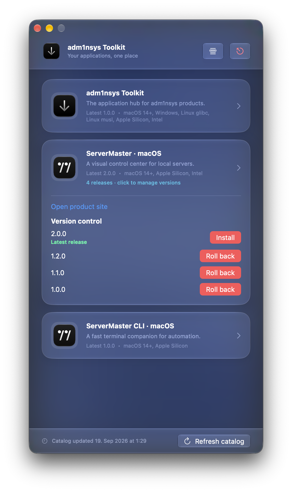
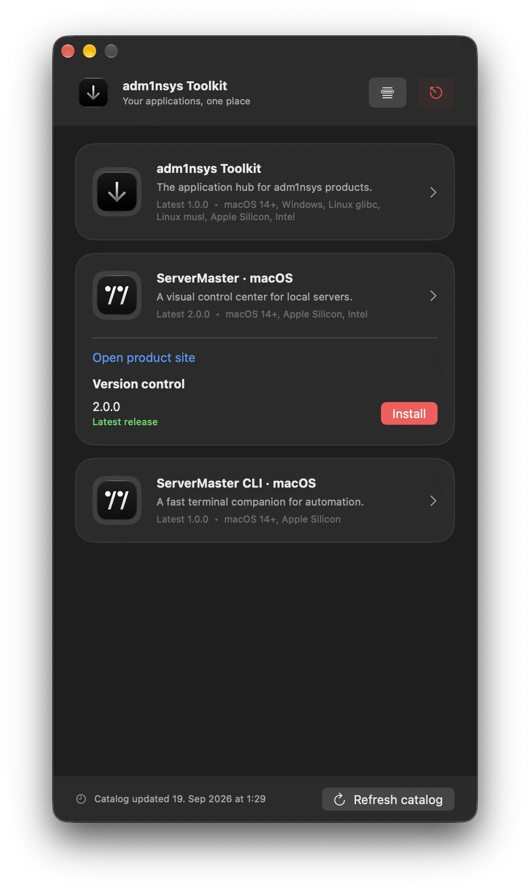

Discover
See what is installed, what is available and which versions belong to your system.
adm1nsys Toolkit keeps your applications, versions and updates within reach. Find a product, choose a release and install it without scattered archives or manual hunting.

Toolkit is built around a lightweight catalog. New products and releases appear there without requiring a new installer app.
See what is installed, what is available and which versions belong to your system.
Keep multiple releases, move between versions or roll back when you need to.
Update the catalog once. The latest products and download links are ready in the same place.
Use the calm, focused interface for everyday installs. Turn on the advanced view when you need multiple versions and rollback control.

Download the macOS application and keep your adm1nsys products together.